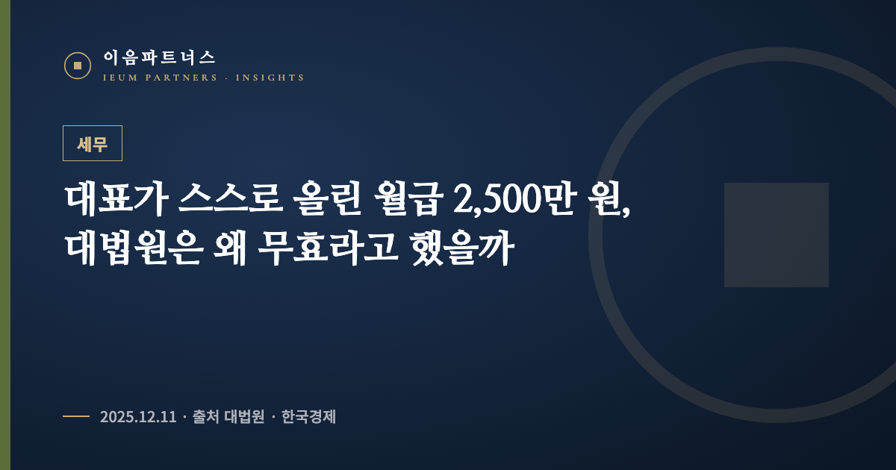

대표가 스스로 올린 월급 2,500만 원, 대법원은 왜 무효라고 했을까

토목공사업을 하는 한 회사의 대표이사가 급여 결정을 대표이사에게 맡긴 회사 규정을 근거로 자기 월급을 650만 원에서 2,500만 원까지 올렸는데, 2025년 12월 11일 대법원에서 이 증액이 무효라는 판단이 확정됐습니다. 해임된 뒤 퇴직금 등을 청구한 소송에서 나온 결론입니다. 대표님 회사의 정관과 임원 보수 규정에는 대표 보수를 누가 정한다고 적혀 있습니까? 이 글에서는 사건 내용과 대법원이 본 기준, 지금 확인할 점을 정리합니다.
이 사건은 세금 추징이 아니라 회사와 전 대표 사이의 민사 소송이고, 대법원이 상고를 기각해 판단이 확정됐습니다. 보수를 정하는 절차가 잘못되면 받아 온 급여의 근거가 흔들릴 수 있어, 주주가 여럿인 회사라면 짚어 볼 만합니다. 정관과 보수 규정 점검이 필요하시면 카카오톡 채널 이음파트너스로 편하게 물어 주세요.
어떤 일이 있었나
이 회사 정관은 이사 보수를 임원급여지급규정에 따르게 했고, 그 규정은 급여를 경영 성과와 기여도에 따라 대표이사가 정하고 지급 한도만 주주총회 결의로 정하도록 했습니다. 2020년 2월 개정한 정관은 이사 보수 한도를 연간 10억 원으로 두었지만, 대표이사가 급여를 정할 수 있게 한 조항은 그대로 남았습니다(대법원 판결문). 대표는 이 규정에 따라 월급을 단계적으로 올렸습니다.
| 구분 | 내용 |
|---|---|
| 2015년 3~12월 | 월 650만 원 |
| 2016년 1월~2017년 3월 | 월 833만 4천 원 |
| 2017년 4월~2018년 12월 | 월 2,000만 원 |
| 2019년 1월~2021년 4월 | 월 2,500만 원 |
대표는 2021년 5월부터 급여를 받지 않았고, 회사는 2021년 8월 25일 임시주주총회에서 그를 사내이사에서 해임했습니다. 이후 대표는 미지급 급여와 퇴직금, 손해배상을 청구했고, 회사는 대표가 보수를 임의로 정해 더 받아 간 돈을 돌려받을 권리로 맞비기겠다는 상계(서로 줄 돈을 맞비겨 없애는 것)를 주장했습니다(한국경제).
대법원이 본 기준
상법 제388조는 이사 보수를 정관에 액수로 정하지 않았다면 주주총회 결의로 정하도록 합니다. 대법원은 이 조항이 이사가 자기 보수로 개인적 이익을 꾀하는 것을 막기 위한 강행규정(회사 규정이나 당사자 합의로 바꿀 수 없는 규정)이라고 다시 확인했습니다.
| 구분 | 내용 |
|---|---|
| 가능 | 정관이나 주주총회에서 보수 총액·한도를 정하고, 개별 이사 지급액은 이사회에 위임 |
| 안 됨 | 보수에 관한 사항을 이사회에 포괄적으로 위임 |
| 안 됨 | 개별 이사 보수를 대표이사가 정하도록 정관에 두거나, 주주총회에서 대표이사에게 위임 |
대법원은 “대표이사가 자신의 보수를 스스로 결정한다면 이와 관련하여 개인적 이익을 도모할 위험이 있어” 법의 취지에 어긋난다고 밝혔습니다(대법원 판결문). 이사회는 대표이사의 직무도 감독해야 하는데, 이사들의 보수를 대표 혼자 정하면 그 감독이 제대로 이뤄지기 어렵다는 점도 이유로 들었습니다.
결론은 어떻게 났나
대법원은 대표이사가 보수를 정하게 한 규정이 상법 제388조에 어긋나 무효이고, 월급을 월 2,500만 원 등으로 올린 것도 무효라서 늘린 금액만큼의 보수는 청구할 수 없다고 본 원심을 확정했습니다. 대표가 아닌 다른 최대주주가 지분 67.85%를 가진 회사라 1인 회사(주주가 사실상 한 명인 회사)로 보기 어렵고, 증액을 정한 주주총회 결의가 있었다고 보기도 어렵다고 판단했습니다.
원심은 급여가 입금된 계좌를 대표가 처분할 수 없었다고 보기 어렵다며 그 급여 전액을 대표의 이득으로 봤고, 회사의 상계 주장이 신의성실 원칙에 어긋난다는 대표 측 주장도 받아들이지 않았습니다. 대법원도 이 판단을 유지했습니다. 다만 판결문에는 돌려줘야 하거나 맞비긴 금액이 나오지 않습니다.
대표님이 지금 확인할 것
- 정관이나 임원 보수 규정에 대표이사가 보수를 정할 수 있다는 문구가 있는지
- 주주총회에서 정한 보수 총액·한도와, 개별 지급액을 정한 이사회 결의가 의사록으로 남아 있는지
- 대표 월급을 올릴 때마다 그 금액을 뒷받침하는 결의가 있었는지
- 대표 말고 다른 주주가 있는 회사라면, 규정을 고치기 전에 변호사·세무사와 현행 절차를 함께 확인하시길 권합니다
참고한 자료
- 대법원 2025. 12. 11. 선고 2025다214605 판결(퇴직금 등 청구의 소) — 대법원 (2025.12.11)
- 이사의 보수, 대표이사가 정할 수 있을까 — 한국경제 (2026.01.20)
임원 보수 규정과 결의 기록을 함께 살펴보고 싶으시다면 카카오톡 채널 이음파트너스로 편하게 문의해 주세요.
※ 이 글은 일반적인 정보 제공을 위한 것으로, 개별 사안은 세무사·노무사 등 전문가와 함께 확인하시기 바랍니다.